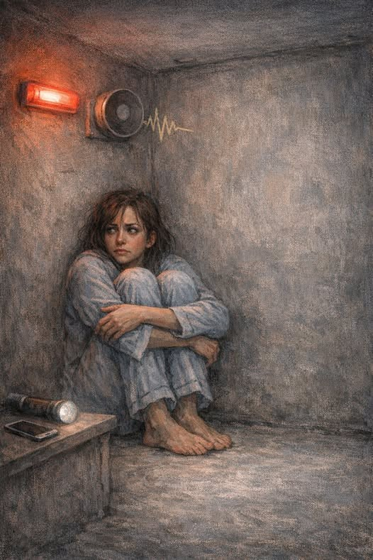

שלוש לפנות בוקר,
אזעקה קורעת אותי מהמיטה,
מתעוררת לתוך בהלה חדה,
רצה למרחב מוגן.
קמתי מהר מדי,
החלום עוד דבוק לי לעור,
והלב דופק,
יש משהו המנסה
לברוח מתוכי.
שוכחת את המשקפיים,
שעל השידה, עדות חדה,
לכמה מעט אני רואה
וכמה הרבה אני מרגישה.
העולם מטושטש,
אבל הפחד, חד מדי.
יוצאת מהמיטה החמה
והלב חשוף,
הקירות שהכירו אותי
נשארים מאחור,
ואני לא יודעת
אם אחזור אליהם כמו שהיו!
משהו בי כבר משתנה.
ובתוך הבלבול הזה,
שואלת את עצמי
איך ממשיכים לנשום
כשכל מה שמוכר
מרגיש פתאום רחוק ושביר.
מתוך הערפל הזה,
מגלה משהו קטן בי
שלא נשבר, למרות הכול!
העובדה שאני ממשיכה לנוע,
גם בלי לראות ברור.
העיניים אולי מטושטשות,
אבל עמוק בפנים,
יש נקודה אחת שלא כבתה,
נקודה שיודעת!
אני עוד אחזור לעצמי.
